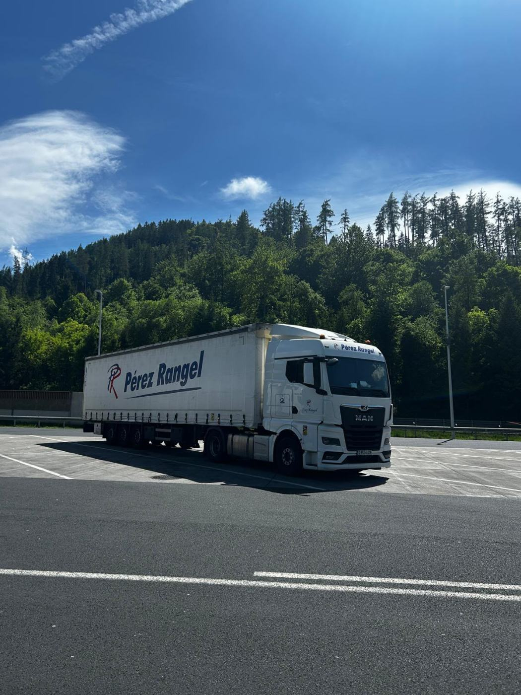
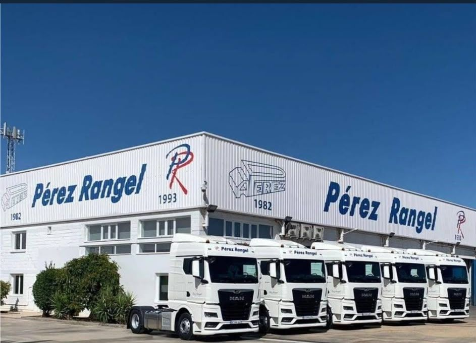
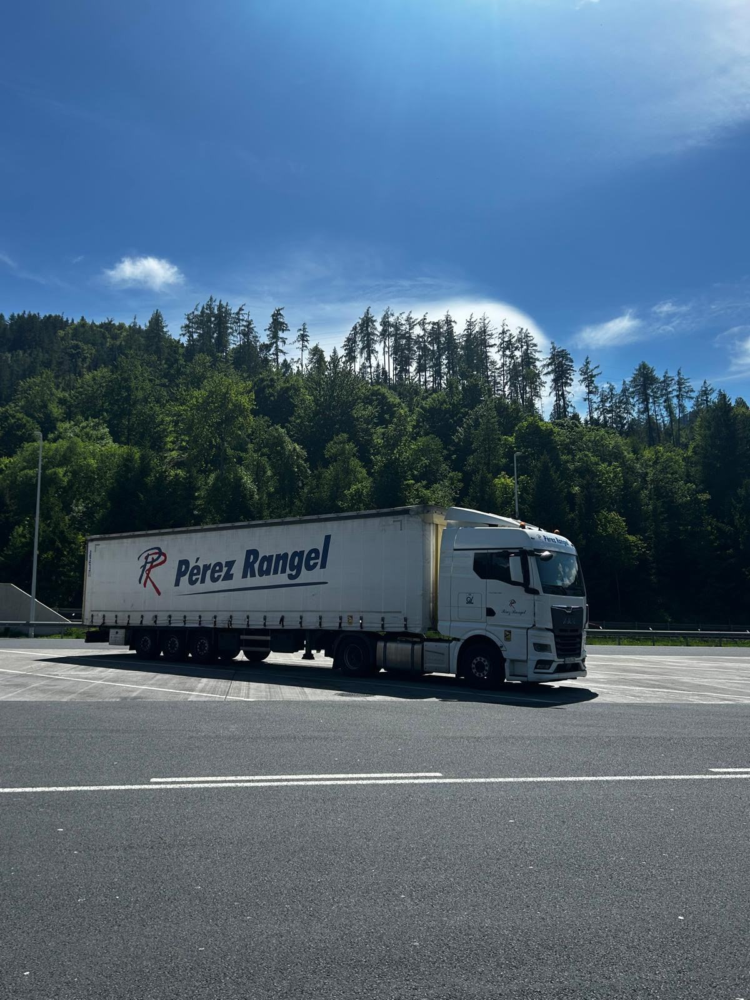
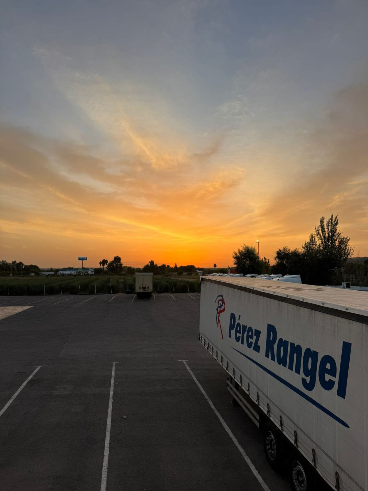
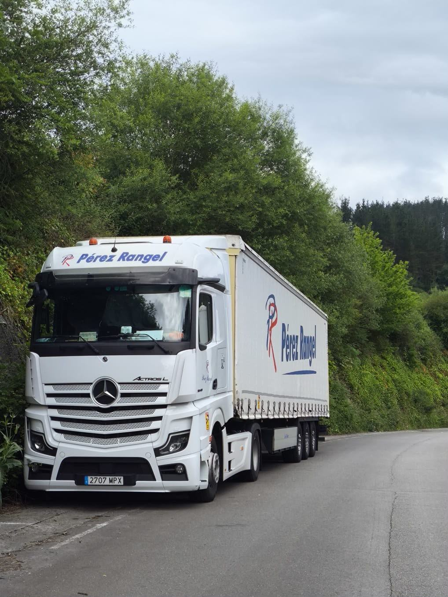
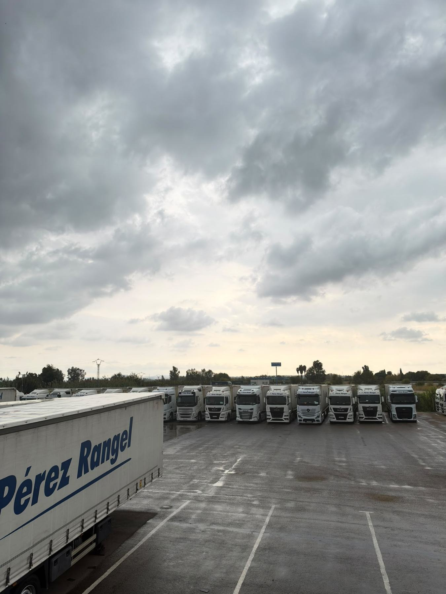
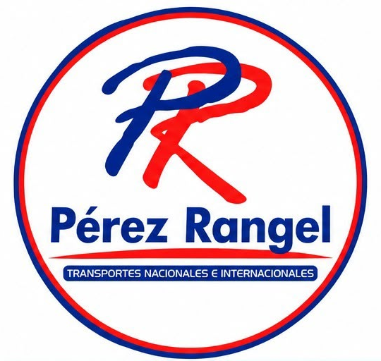
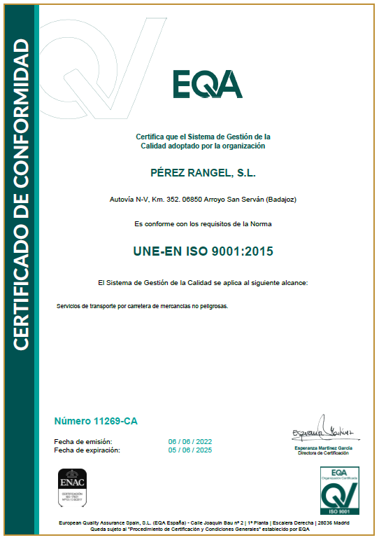
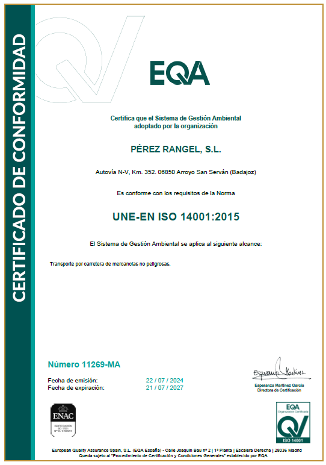

Expediente MC-20-0024 · Implantación de un Sistema de Gestión de Calidad ISO 9001:2015. Ayuda de 4.800 € cofinanciada al 80 % por el Fondo Europeo de Desarrollo Regional.
Transporte y logística · Arroyo de San Serván, Badajoz
La mejor manera de transportar tus mercancías
Transporte nacional e internacional por carretera, almacenaje, grupajes y distribución. Más de cuarenta años moviendo la industria desde Extremadura a toda Europa.
0años en la carretera
0tractoras MAN, Volvo, Mercedes-Benz y DAF
0semirremolques tautliner
0de almacén vigilado 24 h
Servicios
Un servicio según tus necesidades
Soluciones logísticas adaptadas a cada cliente, enfocadas en que tu cadena de producción nunca pare. Sean cuales sean tus mercancías, cuenta con Transportes Pérez Rangel.

01
Transporte nacional e internacional
Todo tipo de mercancías por carretera, dentro y fuera de España, con conductores profesionales que hablan varios idiomas.

02
Almacenaje
Más de 5.000 m² en nuestra base logística, con vigilancia permanente.

03
Grupajes
Varios clientes en un mismo vehículo: menos coste, mismos plazos.

04
Distribución
Reparto y entrega final coordinados desde nuestro departamento de tráfico.

05
Seguimiento GPS
Sabes dónde está tu mercancía en cada momento.

06
Vigilancia 24 horas
Instalaciones vigiladas de forma permanente.
Flota
Una de las flotas más modernas del sector
Tractoras MAN, Volvo, Mercedes-Benz y DAF de última generación y semirremolques tautliner con portabobinas. Un departamento de mantenimiento propio revisa cada vehículo antes de salir a ruta.
Desliza para ver la flota
- Tractoras
- +40
- Semirremolques
- 50
- Carrocería
- Tautliner · portabobinas
- Localización
- GPS en toda la flota
- Mantenimiento
- Departamento propio
- Base
- Arroyo de San Serván
Cobertura
De Extremadura a toda Europa
La base está en la autovía Madrid–Lisboa, en Arroyo de San Serván: junto a Portugal y en el eje que conecta con Madrid y el resto de la península. Nuestro equipo de tráfico atiende en varios idiomas y nuestros conductores cargan y descargan en toda Europa.
- Rutas regulares nacionales
- Internacional: Portugal, Francia y resto de Europa
- Base logística con almacén propio y vigilancia 24 h
- ≈ 2 hSevilla
- ≈ 2 h 30Lisboa
- ≈ 3 h 15Madrid
- ≈ 4 h 30Oporto
Tiempos orientativos en condiciones normales.
Consultar una rutaLlueva, nieve o haga 40 grados, tu mercancía llega.
Enfocados en que tu cadena de producción nunca pare.
Cómo trabajamos
Tres pasos, sin sorpresas
- 01
Nos cuentas tu carga
Origen, destino, mercancía y plazo. Te respondemos con un presupuesto claro y sin letra pequeña.
- 02
Planificamos la ruta
Nuestro departamento de tráfico asigna vehículo y conductor y coordina la carga en tu horario.
- 03
Entregamos con seguimiento
Sabes dónde está tu mercancía en cada momento gracias al GPS de toda la flota.

Empresa
Una empresa afianzada y experta
Empresa familiar nacida en 1993 de la unión de profesionales de la logística y el transporte, con origen en 1982. Hoy rondamos los 50 trabajadores entre las diferentes áreas, con un personal altamente cualificado y comprometido con el trabajo diario.
- 1982Comienza la actividad de transporte de la familia Pérez.
- 1993Nace Pérez Rangel, S.L. Base en la autovía Madrid–Lisboa.
- HoyMás de 40 tractoras, 50 semirremolques y 5.000 m² de almacén.
Tráfico
Atención personalizada en varios idiomas, nacional e internacional.
Administración
Contabilidad, facturación, recursos humanos, calidad y cobros y pagos.
Mantenimiento
Instalaciones y revisión de vehículos para salir a ruta en perfecto estado.
Comercial
Relación con clientes y captación de conductores profesionales.
Conductores
Profesionales del transporte nacional e internacional, muchos de ellos multilingües.
Certificaciones
Calidad y medio ambiente certificados
Sistema de gestión certificado por EQA con acreditación ENAC para el transporte por carretera de mercancías no peligrosas.

Calidad
UNE-EN ISO 9001:2015
Sistema de Gestión de la Calidad · Certificado nº 11269-CA · EQA / ENAC
Ver certificado →
Medio ambiente
UNE-EN ISO 14001:2015
Sistema de Gestión Ambiental · Certificado nº 11269-MA · EQA / ENAC
Ver certificado →Documento
Política de calidad y medio ambiente
Compromiso de la dirección con la mejora continua, el cumplimiento legal, la satisfacción del cliente y la prevención de la contaminación.
Leer la política →Ayudas cofinanciadas por la Unión Europea
Expediente AC-24-0003-2 · Implantación y certificación de un Sistema Medioambiental ISO 14001:2015. Ayuda de 3.200 € cofinanciada al 85 % por el Fondo Europeo de Desarrollo Regional.
«Una manera de hacer Europa». Textos completos: MC-20-0024 · AC-24-0003-2.
Trabaja con nosotros
¿Quieres formar parte de Pérez Rangel?
Buscamos personal administrativo, gestores de tráfico, conductores y personal de mantenimiento. Envía tu currículum y te contestaremos.
- Conductor/a nacional e internacional
- Gestor/a de tráfico
- Personal administrativo
- Personal de mantenimiento
Candidaturas: administracion@perezrangel.com
Contacto
Hablemos de tu próxima carga
Pérez Rangel, S.L.Autovía Madrid–Lisboa, km 352
06850 Arroyo de San Serván (Badajoz)
- Teléfono
- Por confirmar
- Horario
- Por confirmar